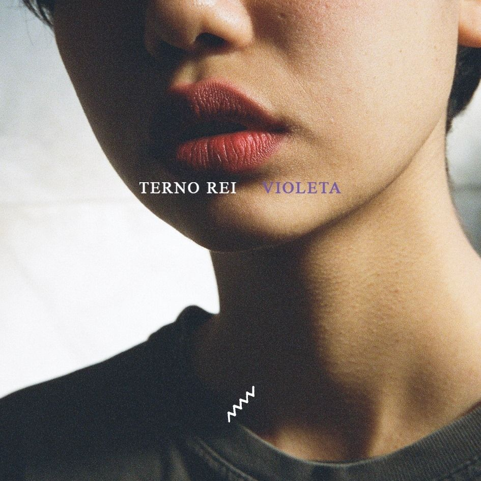

Role para baixo
Não consigo tirar da minha cabeça esses olhos de nunca vi tão perto, a ponto de bater os cílios no meu... E nesse sorriso entreaberto eu já não sei se estou errado ou certo em cultivar esse bem querer.
Apesar de Querer
Rodrigo Alarcon
Pretendo também me embrenhar no emaranhado dos seus cabelos, me deixe te trazer num dengo, pra num cafuné fazer os meus apelos. Eu quero ser exorcizado pela água benta desse olhar infindo, hipnotizado pelas retinas desses olhos lindos.
Disritmia
Martinho da Vila
Gosto muito de te ver, leãozinho... Caminhando sob o sol... O meu coração tão só.. leãozinho, mas basta eu encontrar você no caminho e meu coração tão sol.
Leãozinho
Caetano Veloso

Eu quero me jogar nesse azul, no infinito desses braços — porque assim me sinto livre, aqui me sinto inteiro. Oi... como vai.. você? Quando é que foi ficar.. tão linda?
Yoko
Terno Rei